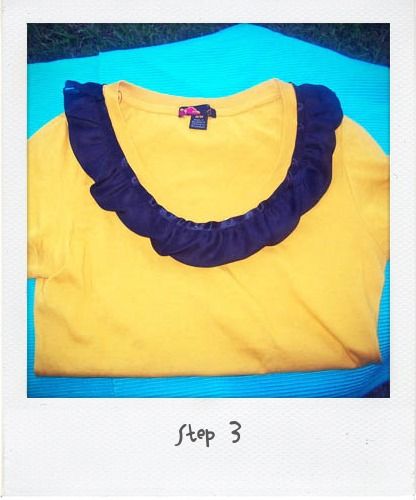
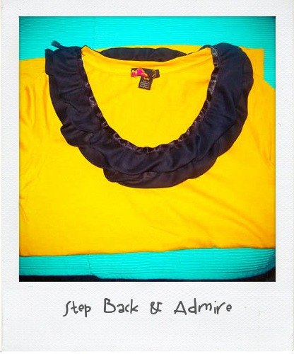

I would like to direct your attention over here.
Here at Tipsy we are HUGE fans of Hair Thursday and its creator Whoorl… so we are feeling like total ROCK STARS right about now.

I would like to direct your attention over here.
Here at Tipsy we are HUGE fans of Hair Thursday and its creator Whoorl… so we are feeling like total ROCK STARS right about now.

This dress is fantastic, especially with the red flats. YOU would look gorgeous, trust me.

There will be no raining on your parade with these babies…
I am the girl that loves to change up my hair. I’ve experimented with different colors, lengths, and styles in my hair past. Long hair provides a lot of flexibility, but after growing my hair for 14 months for my wedding (trims were involved, so I didn’t have caveman hair for the big day) I made The Cut. I cut like a hundred inches ( really probably like 8 ) off my long flowy stringy locks. So, I was in need of styling options for short hair because I can’t just wear my hair the same way every. single. day. and short hair doesn’t allow as many options. WRONG… I have found so many! One of my favs and a fav of the commenters on Flickr Working Closet Pool is what I am going to show you today. So, let’s get this started, shall we? (Please disregard the roots shown in these pics. I repeat, disregard.)

Step One: Gather your supplies. You will need at least two clips to separate and pin up sections, a flexible hold hairspray (I prefer Aussie Sprunch Spray, which I told you about here.), a small brush, and your trusty one inch curling iron

Step Two: Start out with dry straightish hair. If you are blessed with natural wave or curl…we will just be enhancing the natural beauty. My hair isn’t that lucky. Cowlick City, People. You have never seen the likes of this. I have thrown many a hair stylist into shock and awe with these babies, calling their fellow stylists over to take a gander.  You might think it’s wavy, but no. You would be wrong. Those are just cowlicks. I promise. So, what you see here is the cowlicks tamed with a flat iron.
Step Three: Pin about half of your hair onto the top if your head, leaving the bottom free to get down to business. Separate the bangs because we aren’t curling them. I sported curled bangs in my childhood years and that is a look I do not care to revisit.


Step Four: Separate a small section of hair. I like to make my sections uneven so it adds more of a tousled look instead of a Shirley Temple look. Grab your curling iron, clamp the section about a half an inch away from the end and roll the iron away from your face. When hair is all rolled up, spritz with hairspray. Continue this pattern all around the bottom free section.

Step Five: If some of the curls are not optimal, you can pull them apart and recurl using the same technique.


Step Six: Unleash more hair out of your pins and continue curling in the same fashion as Step Four.


Step Seven: When you get the the section of hair at the crown of your head, I separate a front and a back section.


Step Eight: Roll the back section and make sure that you turn your curling iron vertically.
Step Nine: Separate the remaining hair along your natural part. Curl each section like you did in Step Four.


Step Ten: From here on is the important part. Once all hair is completely curled (and I know I look ravishing in this first pic… SIKE!), pull the curls apart with your fingers.

Step Eleven: Scrunch your hair gently.

Step Twelve: Separate bangs along your natural part line at this time.

Step Thirteen: Grab just the crown area of your hair and tease the roots.


Step Fourteen: Spray hair all over and scrunch some more.

Step Fifteen: All Done!
What I love about doing my hair like this is that I can just reach up and kind of scrunch it throughout the day if I feel like it is falling due to the massive amounts of humidity I face everyday. It seems like a lot of steps, but once you are used to it you will finish in no time. It typically takes me about 10 or 15 mins max when I am not being photographed as I style.
I love girly, feminine clothing. So, count me IN on anything that has a rosette or bow involved. These are some swoon-worthy pieces that I have run across lately… simply GORGEOUS!
I have held many gym memberships in my past, 4 to be exact. Every time I start out pumped to no end, only to have the very same outcome of membership cancellation. About 2 years ago I realized that I am just not a gym person, as I signed the cancellation documents of my latest gym member failure. Here are the ways that I stay in shape WITHOUT a gym.

I am completely in love with Glee, specifically the wardrobe of Emma Pillsbury. She is so quirky and cute it makes me want everything she wears on that show.
My husband, being the fireman that he is, answers 911 calls for a living. Fires, heart attacks, you name it… well, there are some emergencies that just don’t fall under his realm of expertise. That is when I step in, Outfit 911. You need me.. I’m here. What are your fashion emergencies? On a budget for a wedding or a hot date? Got a special event planned and you have no idea what to pick from your over-exploding closet full of options? Send me the deets and I’ll be your personal Stacey London and Clinton Kelly.
My good ole’ bud AK approached me with a style dilemma just the other day… an after wedding casual event with friends with a budget of $25.00 for anything new and an abundance of options from her existing and already fabulous wardrobe.
This is the email that I received from AK:

Ok, I need some opinions…I have the J. Crew Jackie cardigan in black, turquoise, coral, orange, bright green, and a light brown. The boots are from left to right: wine, black/red, camel/pink/navy (but the pink/navy won’t show). And I’ll be wearing jeans.
Tell me what you think in terms of a top….I had been thinking maybe something like this??? http://www.forever21.com/product.asp?catalog_name=FOREVER21&category_name=top_casual&product_id=2063568501&Page=4#
so then jewelry….tell me your thoughts. -AK
So I set out on a mission. I browsed the forever21 site of all things incredibly cheap and most of the time uber cute and found an adorably delicious bow tie top that just was beckoning to be bought and put under a lovely cardigan.
Lovely Top (Summer Bow Tank, $15.80) :

I suggested that AK go with turquoise earrings and she showed me her options at home:

My eyes were immediately drawn to the ORANGE on the bottom right… orange will be a lovely compliment to the green cardi. So.. here we have it folks. AK will be cute, casual and chic in the outfit we selected!

When I received this email.. it dawned on me… I get a lot of these emails: My sister looking for help planning her college graduation dress and accessories, friends asking for advice on what to wear to an upcoming shower or wedding. I like helping people find the right options for that special occasion and I would love to help you out too…. send your emails to me at der AT tipsysociety DOT com. I’ll be waiting to put your fashion fires out!

A LOT of you have tried a vodka and red bull…BUT have you tried grape, lemon or cherry vodka and red bull… UM PROBABLY NOT. And you should… because it’s awesome squared.
I am a pretty regular participant in The Working Closet flickr pool and an avid reader of The Working Closet blog. The gist is that you post your everyday looks, so you can inspire others and gain inspirations for what to wear daily. I enjoy it and think its a great way to make you think about shopping your own closet.
Last week I posted a tee that I wore and happened to have made myself.
This is the tee that started it all:

The wonderful Susan of The Working Closet and Friday Playdate asked me kindly to create a tutorial of how I made my tees. They are a great way to make new of your old tiresome things and extend your wardrobe, thus saving money on shopping sprees.
Here is a step by step tutorial on a double ruffle neck tee:

Supplies: a tee (any neck will do), approximately 2 yards of ruffled or pleated ribbon or blanket/quilt binding, pins, and a needle and thread (you could definitely do this on a sewing machine as well)

Step 1:Â Pin your ribbon right along the edge of the neck band on the tee. Pin all the way around the entire band.

Step 2:Â Stitch along the top area of the ribbon

Step 3:Â Continue your stitching under the neck band all the way around the tee, including the back. Then cut your ribbon off once you have made it all the way around.

Step 4:Â Lay the next layer of ribbon right at the top of the neck band and pin all the way around.

Step 5:Â Stitch this layer of ruffle the exact same way you did before, being a little more cautious since this layer will not be covered with another layer. Cut your ribbon off once you have made it all the way around.

Step 6:Â Step back and admire your work

Here I am modeling the tee… it is so easy and such a cute way to update a plain tshirt in a very inexpensive way.


{kind=link}
{kind=link}
{kind=link}
Recent Comments